Eigene Docker-Images erstellen¶
In den vorherigen Kapiteln wurde erläutert, wie man bestehende Images aus dem Docker Hub verwendet, wie man Container startet und wie man mit Volumes arbeitet. Nun geht es einen Schritt weiter, eigene Docker-Images erstellen. In vielen Fällen reicht es aus, ein bereits vorhandenes Docker-Image zu verwenden – zum Beispiel ein Image mit einer fertigen Webserver-Software wie Nginx oder ein Image mit der Programmiersprache Python. Diese Images findet man in der Regel auf Docker Hub, der großen öffentlichen Sammlung von Images. Aber manchmal braucht man etwas Individuelles – etwas, das genau zu den eigenen Anforderungen passt. In solchen Fällen ist es sinnvoll oder sogar notwendig, ein eigenes Docker-Image zu bauen.
Wir hatten ja bereits erfahren, dass ein Docker-Image eine Art Schablone für Container ist. Ein Container ist dann eine laufende Instanz eines Images. Man kann sich ein Image also wie ein Installationspaket und den Container wie die tatsächlich installierte und laufende Anwendung vorstellen.
Das Dockerfile ist die zentrale Datei zum Bau eines Docker-Images. Es enthält Schritt-für-Schritt-Anweisungen, wie das Image erstellt werden soll. Wir betrachten dazu ein Beispiel:
-
Stellt euch vor, ihr entwickelst eine eigene Website oder ein kleines Webprojekt mit HTML, CSS und JavaScript.
-
Man möchtet diese Seite mit dem Webserver Nginx ausliefern.
-
Das Standard-Image von Nginx zeigt aber nur eine Beispielseite.
-
Damit unsere eigene Seite angezeigt wird, muss man ein Image erstellen, in dem dein HTML-Code enthalten ist.
Statt der Nginx-Standardseite soll auf localhost eine To-Do-Liste im Browser angezeigt werden. Dafür benötigt man ein eigenes Image, das genau diesen HTML-Code enthält. Wir erstellen einen neuen Ordner MySite und öffnen ihn in VS Code. Außerdem erstellen wir unter MySite noch einen weiteren Ordner mit der Bezeichnung frontend. Innerhalb von frontend liegt der Dockerfile:
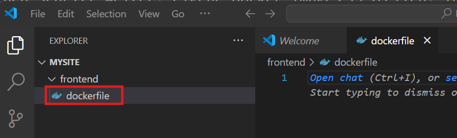
Außerdem installieren wir noch die Docker Extension, damit wir die Autovervollständigung und weitere nützliche Funktionalitäten erhalten:
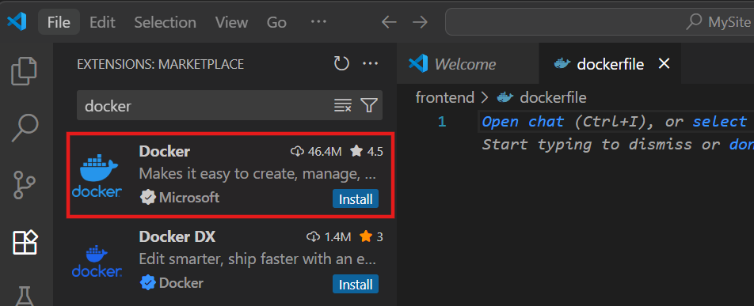
Man erstellt in fast allen Fällen nicht von Null aus ein Dockerfile, sodnern baut auf anderen Docker-Images auf. Wir schreiben in die dockerfile:
1 | |
Die erste Zeile ist der erste und wichtigste Befehl in einem Dockerfile. Sie sagt Docker: "Verwende das fertige Nginx-Image in der Version 1.27.0 als Ausgangsbasis für mein eigenes Image."
Nun können wir in den frontend-Ordner navigieren:
1 | |
Nun erstellen wir ein neues Image, basierend auf dem dockerfile im aktuellen Verzeichnis und geben ihm den Namen mysite:
1 | |
-
-tsteht für "tag", also Etikett oder Bezeichner, dieser Name hilft später dabei, das Image zu starten oder es weiterzugeben. -
Der Punkt
.gibt an, welches Verzeichnis als sogenannter Build-Kontext verwendet werden soll. Das bedeutet, Docker schaut in diesem Verzeichnis nach dem Dockerfile und hat nur Zugriff auf Dateien in diesem Ordner (und Unterordner). Docker hat beim Bauen nur Zugriff auf Dateien innerhalb des angegebenen Kontextes – also nicht auf übergeordnete Ordner!
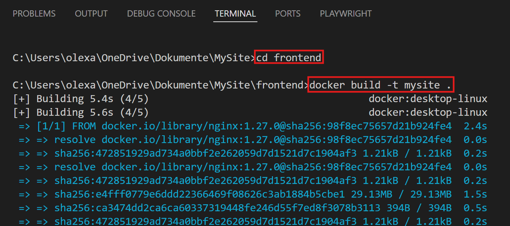
Nun sollte unser Image mit dem Namen mysite in Docker Desktop sichtbar sein:
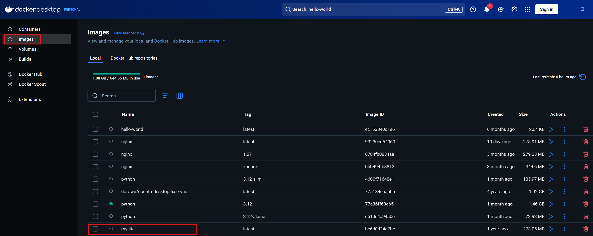
Wir können ihn ausführen, aber momentan ist es nichts weiter als eine Kopie vom nginx-Image. Wir werden nun weiter unser dockerfile anpassen. Dazu erstellen wir unter dem frontend-Ordner einen static-Ordner mit einer html-Datei, welche den Namen index.html hat:
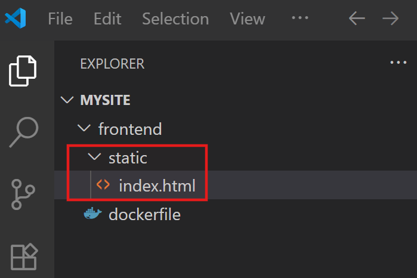
index.html:
1 2 3 4 5 6 7 8 9 10 11 12 13 14 15 16 17 18 19 20 21 22 23 24 25 26 27 28 29 30 31 32 33 34 35 36 37 38 39 40 41 42 43 44 45 46 47 48 49 50 51 | |
Bisher enthält unser Docker-Image nur den standardmäßigen HTML-Inhalt von Nginx. Nun wollen wir diesen durch unsere eigene Datei index.html ersetzen. Dafür müssen wir unsere HTML-Datei in den richtigen Ort innerhalb des Images kopieren – dorthin, wo Nginx nach statischen Inhalten sucht. Der Ort, an dem Nginx standardmäßig HTML-Dateien erwartet, ist:
1 | |
Daher passen wir unseren dockerfile an:
1 | |
Da sich unser Dockerfile verändert hat, müssen wir das Image neu bauen:
1 | |
In Docker Desktop sollte man sehen dass kürzlich unser Image erstellt wurde:
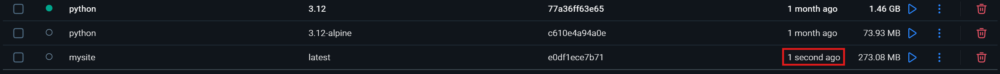
Jetzt wollen wir unser eigenes Image testen. Dafür starten wir einen Container und veröffentlichen den Port 80 auf unserem lokalen Rechner:
1 | |
Der Container startet Nginx – und der Nginx-Server zeigt jetzt unsere eigene To-Do-Liste im Browser an. Dazu öffnen wir auf unserem Computer http://localhost

Es ist momentan eine reine Frontend-Anwendung, man sollte auch Todo-Items hinzufügen können:
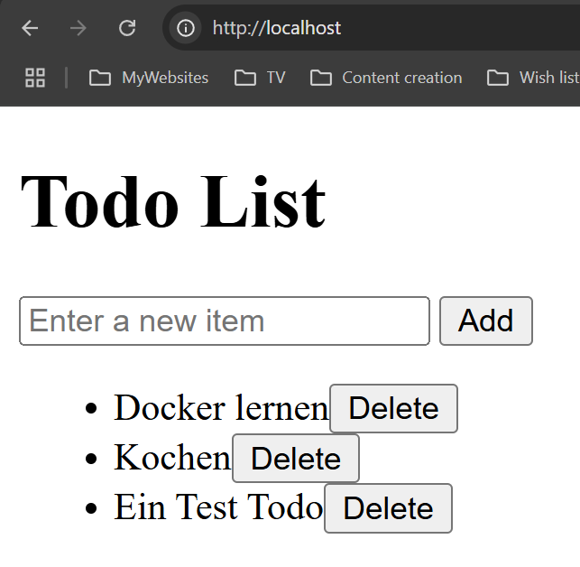
Wir könnten nun prüfen ob im Container die index.html-Datei wirklich hinterlegt wurde. In Docker Desktop gehen wir unter "Containers" auf den momentan ausgeführten Container, mit dem Image mysite:
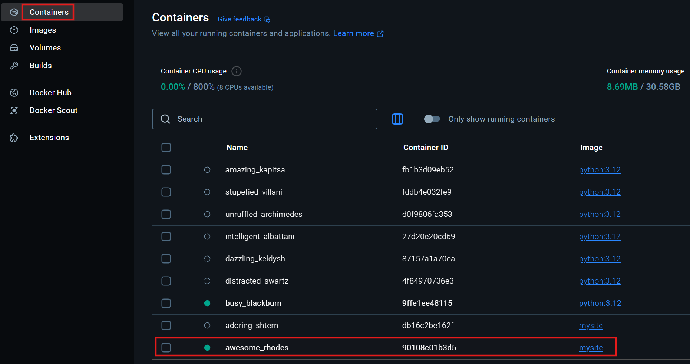
Wenn wir in der Container-UI sind, klicken wir noch auf "Exec":
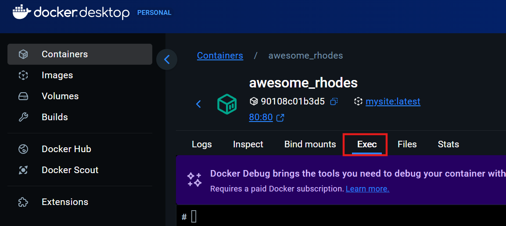
Jetzt geben wir ein:
1 2 | |
Hier sollte man die index.html-Datei sehen:
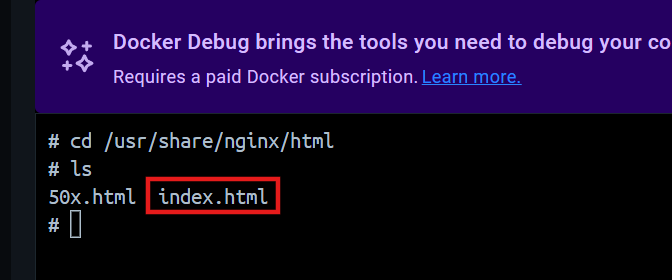
Wir können auch den Inhalt der Datei anschauen:
1 | |

In dem Verzeichnis ist nicht nur unsere index.html Datei vorhanden, sondern noch eine 50x.html-Datei, welche welche von Nginx als Standard-Fehlermeldungsseite für Serverfehler (z.B. "500 Internal Server Error") verwendet wird. Diese Datei stammt aus dem ursprünglichen Nginx-Image und wird automatisch mitgeliefert. Wir möchten dass diese Datei nicht vorhanden ist, dazu erweitern wir unser dockerfile:
dockerfile:
1 2 3 4 5 6 7 | |
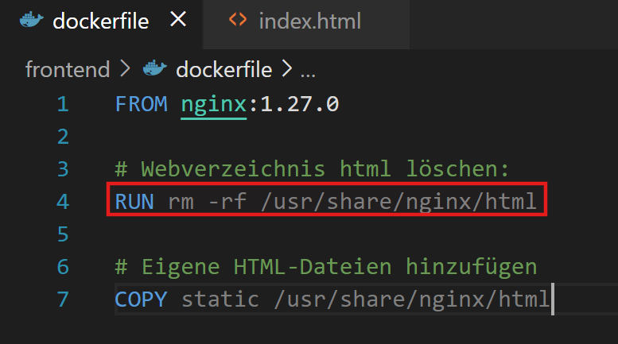
Da sich unser Dockerfile verändert hat, müssen wir das Image neu bauen:
1 | |
Jetzt wollen wir wieder unser eigenes Image testen. Dafür starten wir einen Container:
1 | |
Unsere Todo List unter http://localhost sollte weiterhin ohne Probleme funktionieren. Jetzt müsste aber NUR die Datei index.html vorhanden sein, das Testen wir durch:
1 2 | |
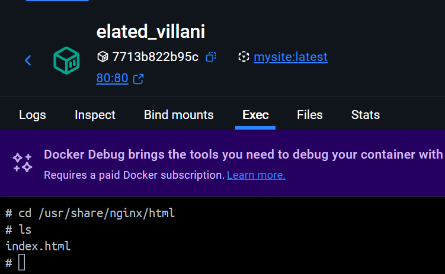
Nun haben wir gelernt, wie man ein eigenes Docker-Image erstellt und darin eine statische Website mit Nginx bereitstellt. Am Ende haben wir ein vollständiges Docker-Image gebaut, das eine funktionierende To-Do-Liste im Browser darstellt – und das ganz ohne Backend, rein im Frontend mit JavaScript.
Übungsaufgabe: Dockerfile-Befehle zuordnen¶
Windows-Installation — Dockerfile-Befehle zuordnen
Ordne die Dockerfile-Anweisungen (1–6) den Bedeutungen (A–F) zu.
Anweisungen:
-
FROM ubuntu:22.04 -
RUN apt-get update && apt-get install -y curl -
COPY . /app -
WORKDIR /app -
EXPOSE 8080 -
CMD ["nginx", "-g", "daemon off;"]
Bedeutungen:
A. Legt das Basis-Image fest
B. Führt Befehle während des Image-Builds aus (erstellt Schicht)
C. Kopiert Dateien aus dem Build-Kontext ins Image
D. Setzt das Arbeitsverzeichnis für nachfolgende Anweisungen
E. Deklariert einen Port, den der Container nutzt (Dokumentation)
F. Standardbefehl, der beim Containerstart ausgeführt wird
Lösung
Zuordnung:
- 1 → A (Basis-Image)
- 2 → B (Build-Schritt)
- 3 → C (Dateien kopieren)
- 4 → D (Arbeitsverzeichnis)
- 5 → E (Port-Deklaration, kein Publish)
- 6 → F (Startkommando)